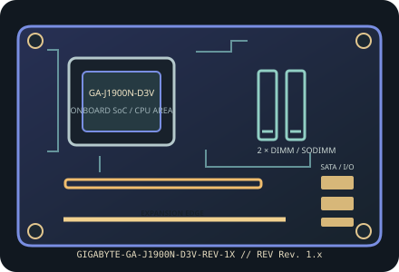

[ INDIVIDUAL COMPONENT // MOTHERBOARDS ]
GIGABYTE GA-J1900N-D3V (Rev. 1.x)
Mini-ITX board built around a soldered Intel Celeron J1900 quad-core SoC. GIGABYTE groups support under Rev. 1.x; match the PCB label to the manual and firmware before service.

IDENTIFICATION: Confirm the complete model suffix and PCB revision printed on the board. Select firmware and parts from the documentation for this exact revision; a matching socket or product family alone does not establish compatibility.
Specifications
| Exact model / PCB revision | GIGABYTE GA-J1900N-D3V (Rev. 1.x) |
|---|---|
| Processor / socket | Intel Celeron J1900 Bay Trail-D quad-core SoC, 2.0 GHz base with burst frequency up to 2.42 GHz; soldered, no CPU socket. |
| Chipset | Bay Trail-D SoC with integrated memory controller, graphics and platform I/O; no separate socketed chipset. |
| Form factor | Mini-ITX, 170 × 170 mm. |
| Memory and slots | Two DDR3/DDR3L SO-DIMM slots, dual-channel, up to 8 GB total, non-ECC unbuffered memory at up to 1333 MT/s. |
| Expansion | One conventional PCI slot and one Mini PCIe slot; Mini PCIe is for supported expansion modules and is not mSATA. |
| Storage | Two SATA 3 Gb/s ports. |
| Network and onboard I/O | Two Realtek Gigabit Ethernet ports; integrated Intel graphics with D-Sub and DVI-D outputs; onboard HD audio. |
| Power connections | 24-pin ATX main-power input; refer to the Rev. 1.x manual for required supply wiring and system power budget. The J1900 platform is low-power but attached drives and add-in cards still need PSU capacity. |
| BIOS / firmware | GIGABYTE UEFI DualBIOS. J1900 is soldered; there is no socket CPU upgrade. Select BIOS by GA-J1900N-D3V and matching Rev. 1.x board identification. |
| Enclosure compatibility | Mini-ITX 170 × 170 mm; use a chassis with Mini-ITX mounting points, rear-I/O clearance, two network-cable openings and space for the chosen PCI card. |
Compatibility and revision notes
The “D3V” product name identifies the dual-LAN variant; do not substitute documentation for similarly named J1900 boards. The board uses DDR3L SO-DIMMs, not desktop DIMMs.
Before assembly, verify the exact CPU support list and minimum firmware, memory generation and population order, storage lane sharing, add-in card dimensions, chassis standoffs and PSU leads in the cited revision-matched manual. Observe ESD precautions and never update with firmware for a similarly named board.
Installation and preservation
Inspect the PCB revision silkscreen, socket or soldered processor, memory slots, power connectors, storage sockets and rear-I/O ports before use. Record BIOS version, date/serial identifiers, installed accessories and test conditions; keep the board manual and firmware tied to its exact model and revision.
Manufacturer sources & manuals
- GIGABYTE — GIGABYTE GA-J1900N-D3V (Rev. 1.x) specificationsOfficial specification record for this motherboard and revision.
- GIGABYTE — GIGABYTE GA-J1900N-D3V (Rev. 1.x) manual, BIOS and support downloadsOfficial revision-specific support page; use its manual, CPU support list and firmware downloads to verify installation and compatibility.
Specifications above are a static reference summary. The matching manufacturer manual, PCB revision and support list are authoritative.